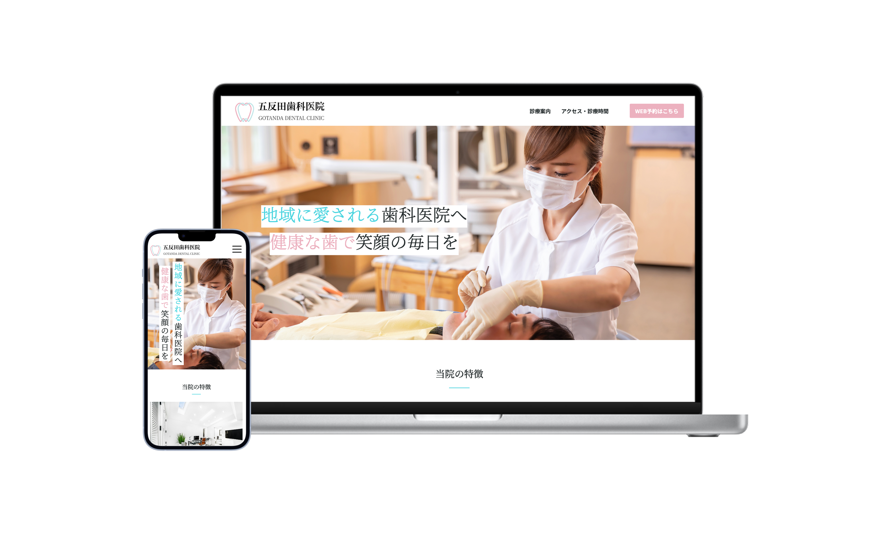
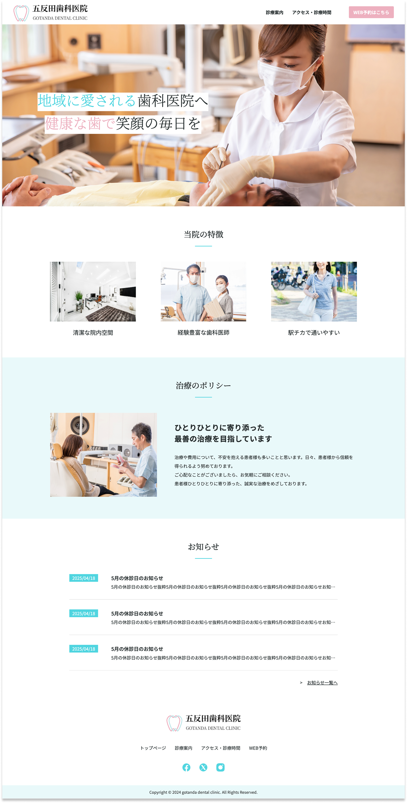
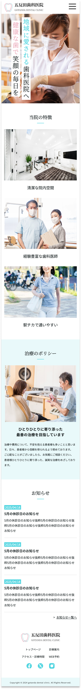
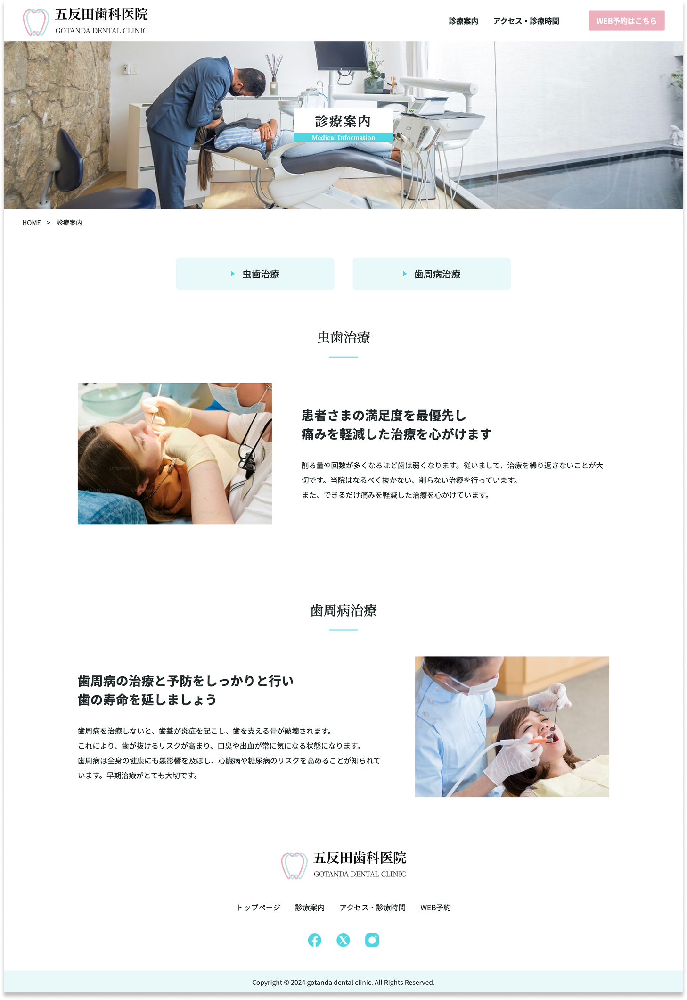
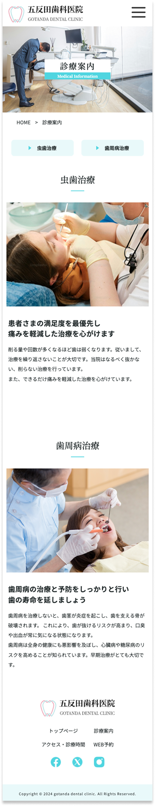
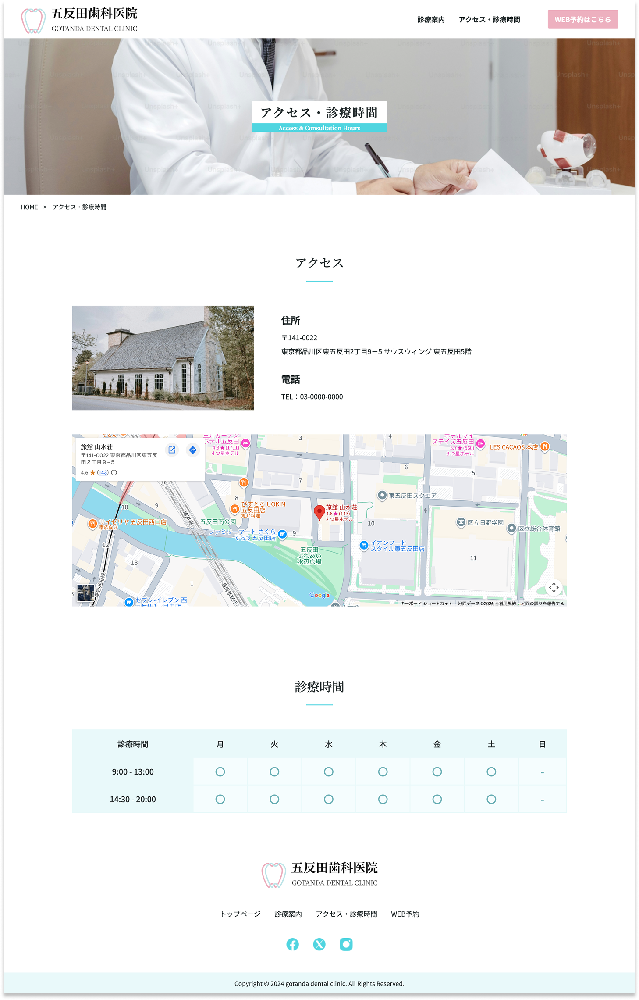
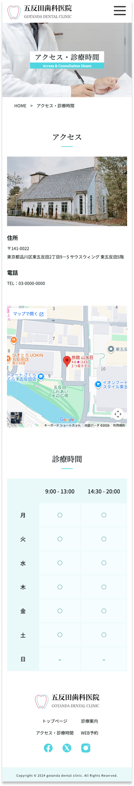
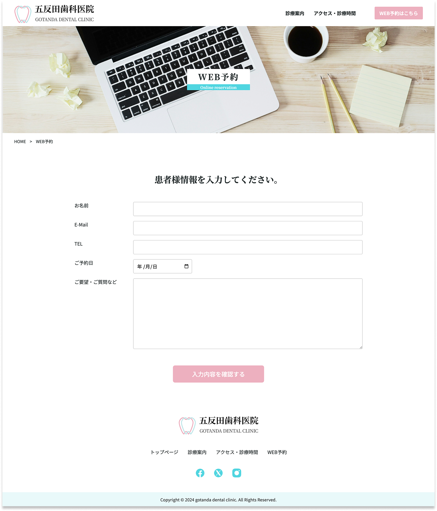
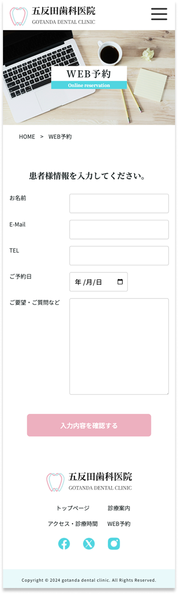

五反田歯科医院

作品説明
-
URL
-
サイト種類
コーポレートサイト（歯科医院）
-
概要
架空の歯科医院のサイトを制作しました。
WordPressで既存テーマをカスタマイズしてコーディングしています。
またレスポンシブ対応・jsでハンバーガーメニューのアニメーション実装も行なっています。 -
目的
地域の患者さんが安心して来院できるよう、診療内容や医院の雰囲気を分かりやすく伝える歯科医院サイトを想定して制作しました。
-
ターゲット
地域に住む30〜50代のファミリー層
-
デザイン
診療時間やアクセスなどの情報にすぐアクセスできる構成とし、予約導線も分かりやすく配置しています。
-
コーディング
医療系サイトとして安心感を持って閲覧してもらえるよう、余白・整列・情報の見せ方を意識し、視認性の高いレイアウトを設計しました。
また、header / main / section などのセマンティックなHTMLを使用し、見た目だけでなく構造としてもわかりやすいマークアップを行っています。
見出し階層の整理や、予約・お問い合わせへの導線設計、aタグと button 要素の適切な使い分けを行い、アクセシビリティにも配慮しました。
レスポンシブ対応では、スマートフォンでも迷わず操作できるよう、文字サイズ・余白・ボタンサイズを調整し、誰にとっても使いやすいUIを意識しています。 -
制作期間
デザイン 8時間
コーディング 1日程度 -
使用ツール等
Figma / Wordpress / html / css / javascript / Visual Studio Code
作品の画面イメージ
HOME画面


診療案内 画面


アクセス・診療時間 画面


WEB予約 画面

